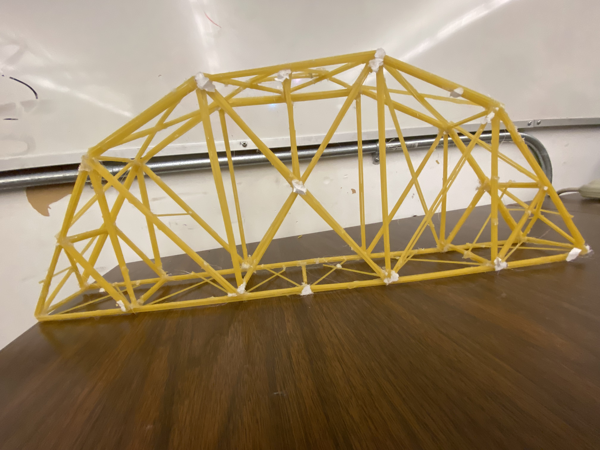
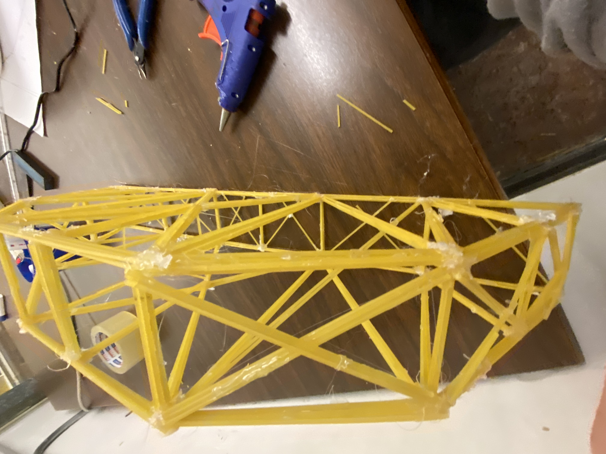

<body bgcolor= e6f2f8>
<ul><li><a href="index.html">home</a></li></ul>
<h1 style= "background-color: 9cd0e2; outline-style: double;">bridge #2 </h1>
    for our second bridge we made a simple arched truss.
        the mesurements where:
        <p>width:7</p>
<p>length:53.5</p>
        <p>height:19</p>
        <p>mass of bridge:170</p>
        <p>mass held:8.900</p>
        <p>score:52.4</p>
   <p> </p>

</body>